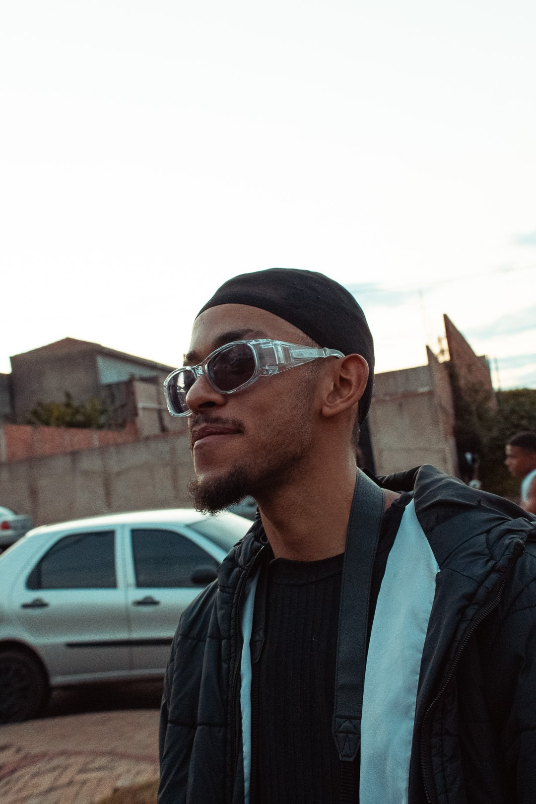

- Nome
- Rhian Augusto
- Apelido
- wee
- Nascimento
- 2003
- Função
- Filmmaker
- Atuação
- Botucatu e Região
- Edição
- desde 2017
- Captação e roteiro
- há pouco mais de 1 ano
Pode me chamar de wee, mas deixe-me apresentar, me chamo Rhian Augusto, nasci em 2003, sou além de filmmaker dançarino de funk e entusiasta dessa cultura, trabalho com edição de vídeo desde 2017 e com captação e roteiro há um pouco mais de um ano, também adoro One Piece.